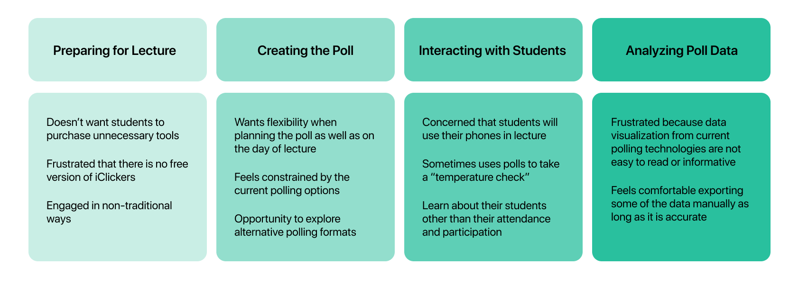
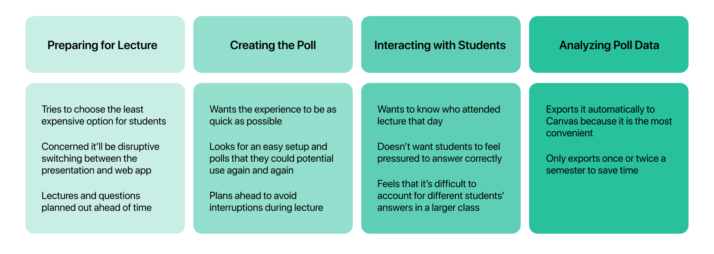
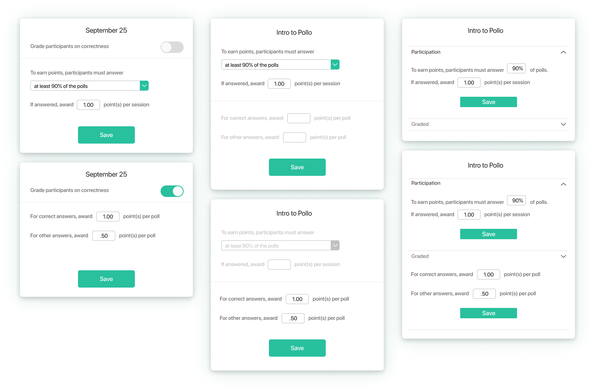
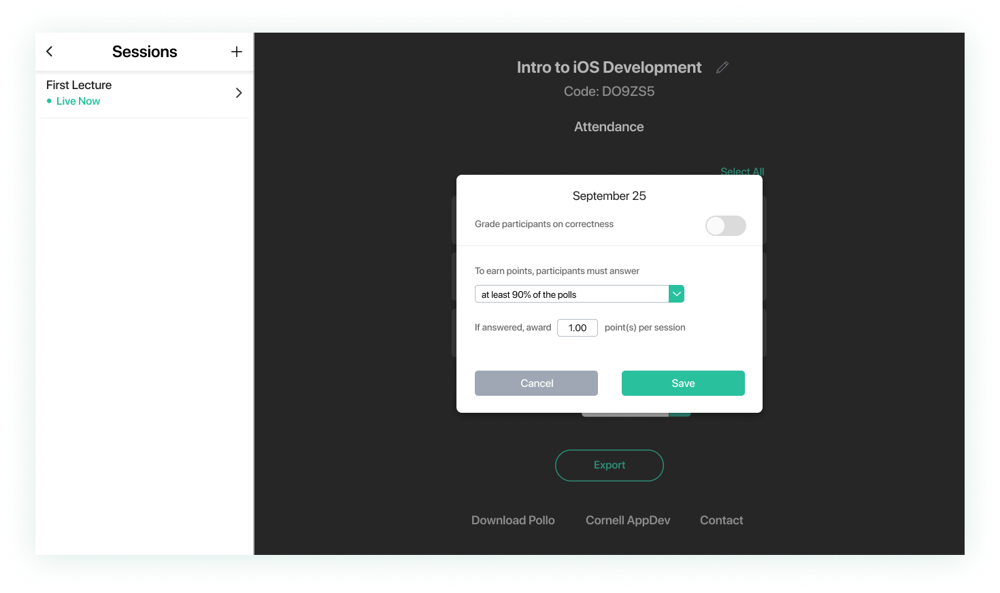
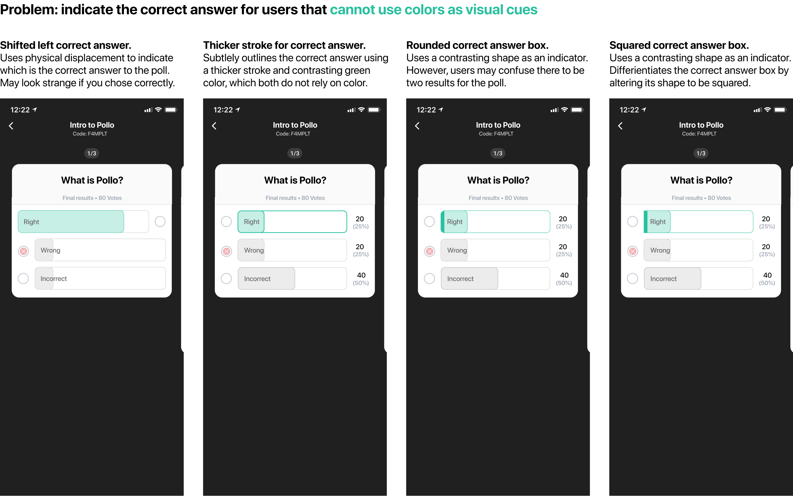
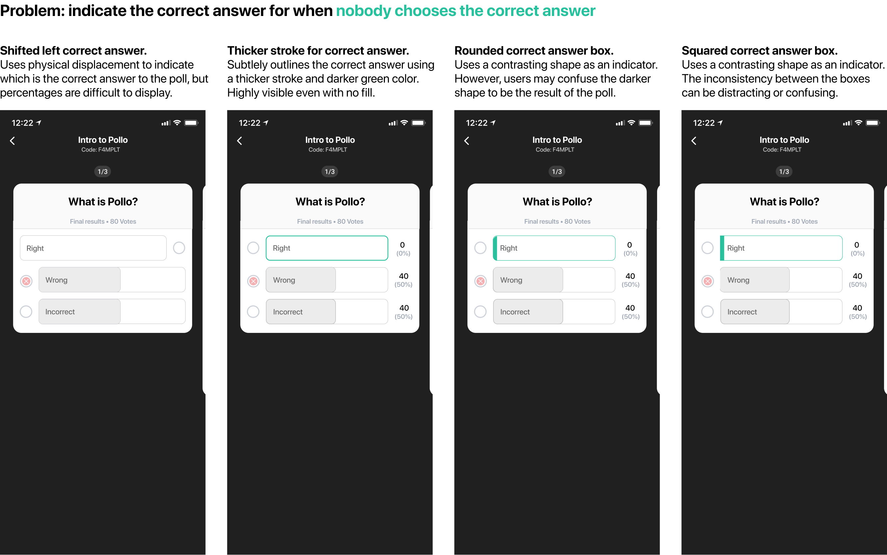
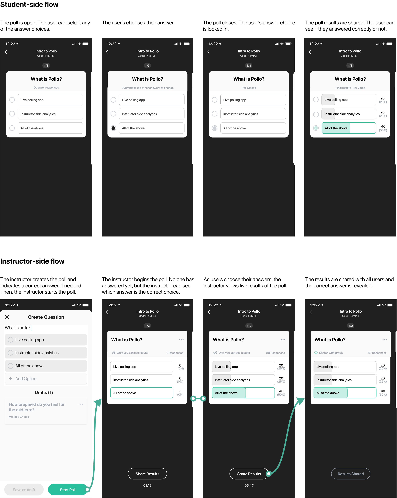

GET TO KNOW POLLO
OVERVIEW
Designing a more flexible and accessible polling service for students and professors in the remote learning era.
ROLE
Product Designer
TEAM
Pod Lead, Product Designer, 2 Product Marketers, iOS Developer, Android Developer, Backend Developer
Cornell AppDev
TIMELINE
March to December 2020
WHAT DOES POLLO BRING TO THE DESK?
Nowadays, professors face the challenge of gauging how well the hundreds of students in the lecture hall understand the material. On the other end of the lecture hall, students try their best to summarize the content in their notebooks or on their computer.
Polling made easy. Pollo lets professors ask questions and take live polls through our mobile and web applications and recieve real-time feedback to gauge which topics their students understand, and which ones they may need spend more time on.
Send live polls. Want to know how prepared students feel for the exam or test their comprehension of the lecture? Quickly create a live poll and send it out during class.
Create drafts. Plan ahead for your lecture by pre-filling the polls you intend on using during class.
Organize your groups. Your polls are labelled with the date they were sent out and organized into custom groups. Use this to see trends in the poll outcomes.
Receive live feedback. As users choose their answers, Pollo shows the results to poll creators using easy-to-read percentages and data visualization.
PROFESSORS IN THE REMOTE LEARNING ERA
Since my university transitioned to mostly online classes for Fall 2020, I teamed up with the product marketing member of the Pollo team to evaluate professor's adjusted teaching styles remotely.
I conducted user interviews with professors from different departments and disciplines. From these chats, we identified two separate journey maps and personas.
Journey Maps   PersonasWHY ARE PROFESSORS HESITANT TO TRY POLLO?
Professors wants organize students' grades but they can't do this well because:
FLEXIBILITY FOR PROFESSORS
Allow professors to customize the point system of different sessions to count for participation or correctness.
Iterations  Final Design CONSIDERING ACCESSIBILITY
I joined the Pollo team when they had the goal of launching the app by the end of the semester. It was daunting to familiarize myself with all the Figma files filled to the brim with Pollo designs. Sifting through the interactions, I identified 2 main issues to tackle before the upcoming launch:
In Pollo, poll creators can choose to assign an answer to be correct or not. If they do, after the share the results of the polls, poll users should be able to see which answer is correct. The existing solution did a great job of visually representing the correct answer and indicating which answer the user chose. However the solution posed two issues:
I created iterations for indicating the correct answer while actively designing for both user considerations. I specifically avoided solutions that required the use of red to indicate incorrect answers. When used in classroom settings, red can carry a negative connotation that represents failure or defeat. I did not want to negatively impact the learning experience, so I focused more heavily on portraying the correct answer instead.
 Ultimately, I chose the solution that uses a thicker stroke and darker green color to indicate the correct poll. It does not rely solely on color as a visual indicator and is not confusing when no one chooses the correct answer, making it is a viable solution for both audiences.
The final interaction for instructors and students:
PREPARING FOR LAUNCH
Pollo exists to facilitate interactions and back-and-forths between professors and students. I used small stars and sun rays to convey the experience of many students in a classroom inputting their answers simultaneously. I used a subtle gradient for the background to convey the dynamic nature of how the polls react to real-time results. The transparent components, such as the Pollo logo, checkmarks, question marks, and percentage signs, represent the data visualizations that formulate as the users answer the polls.
I wanted to highlight Pollo's unique features so I designed a custom poll that asks "What is Pollo?", in which all answers are correct.
MARKETING MATERIAL AND BRANDING
Pollo is available for download: